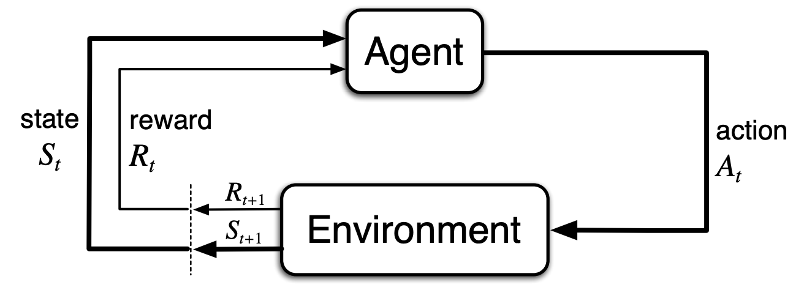

Reinforcement learning : an introduction
Mar 11, 2019 · 762 words · 4 minute read
Learning by interacting with an environment is how people and animals learns. A computer or an agent can also learn the same way.
Reinforcement learning is focused on goal-directed learning from interaction and is composed by four components : a policy, a reward, a value function and optionally model.
Environments
Before doing some learning on our environment, it’s required to first define and describe the environment.
When facing an environment there is a possibility to choose among $n$ actions called the action space. After each chosen action, a numerical reward $r$ is received and a new action choice is possible. The objective is to maximize the total rewards over some time period consisting of $t$ actions or time steps.
Model
The model is the representation of the environment. For an environment, it gives the probability of future states given an action.
Stationary problems
The simplest problems that can be learned are the stationary problems. That is, when the reward probability after each actions do not change at each time step.
The standard example of this is the k-armed bandit problem.
Action value
The goal of the agent is trying to maximize the sum of received rewards by choosing the best actions. The action value $Q_n$ is the estimate of the expected future received rewards at step $n$ after choosing an action $a_n$ and receiving the reward $R_n$ and can be computed by:
$$Q_n(a) = Q_n(a) + \frac 1n [R_n - Q_n(a)]$$
This method update the new estimate $Q_n(a)$ to reduce the difference $R_n - Q_n(a)$ by a small step-size $\alpha = \frac 1n$. The difference represent the error of our estimate $Q_n(a)$ that we try to minimize.
Non-Stationary problems
Environment are almost never stationary because the reward probability is changing over time. In such cases it makes sense to give more weight to recent rewards than to long-past rewards. One way of doing this is to use a constant step-size:
$$Q(a) = Q(a) + \alpha [R - Q(a)] \text{, with } \alpha \in (0, 1]$$
Contextual problems
The two previous problems are nonassociative : there is only single situation, or state,
for action selection. Most of the time, an environment has more than one state and actions
need to be chosen based on the current situation.
The agent have to learn the mapping from states to the actions
that are the best in those states : the policy $\pi$.
Markov Decision Processes
Markov Decision Processes (or MDP) are the mathematical representation of the reinforcement learning problems or environments. This formalize the learning component as the agent interacting with an environment in a sequence of discrete time steps, $t = 0, 1, 2, 3, \ldots$. At each time step $t$, the agent receive the environment state, $S_t \in \mathcal S$ and select an action, $A_t \in \mathcal A(s)$. One time step later, the agent recieve a numerical reward, $R_{t+1} \in \mathcal R \subset \mathbb R$ with a new _state_ $S_{t+1}$.

Trajectory
The trajectory is the sequence of state, action and rewards like this :
$$S_0, A_0, R_1, S_1, A_1, R_2, S_2, A_2, R_3, \ldots$$
Return
The return is the sum of rewards and is defined as:
This approach is valid only for tasks with an actual terminal state $T$, called episodic tasks.
Discounted return
In case of continuing task (i.e. $T = \infty$) the return $G_t$ could be infinite. To make the return finite, we introduce a discount factor $\gamma$ and defining the discounted return:
The return can be slightly modified to take into account both continuing tasks and episodic tasks:
Policy
A policy is a mapping from states to probability of selecting each possible action. We denote $\pi(a|s)$ the probability that $A_t = a \text{ if } S_t = s$ while following policy $\pi$ at time $t$.
Value functions
The value $v$ represent the total amount of rewards an agent can expect to received in the future. The reward is immediate but the value is the expected sum of future rewards.
State-Value function
The state-value function of a state $s$ under policy $\pi$, denoted $v_\pi(s)$, is the expected return when starting in $s$ and following $\pi$ thereafter:
The optimal state-value function, denoted $v_*(s)$ defined as:
Action-Value function
The action-value function of taking action $a$ in state $s$ under policy $\pi$, denoted $q_\pi(s, a)$, is the expected return when starting from $s$, taking the action $a$, and following policy $\pi$ thereafter:
The optimal action-value function, denoted $v_*(s)$ defined as:
Optimal policy
The optimal state-value function or optimal action-value function are found for at least one policy called the optimal policy and denoted $\pi_*$.